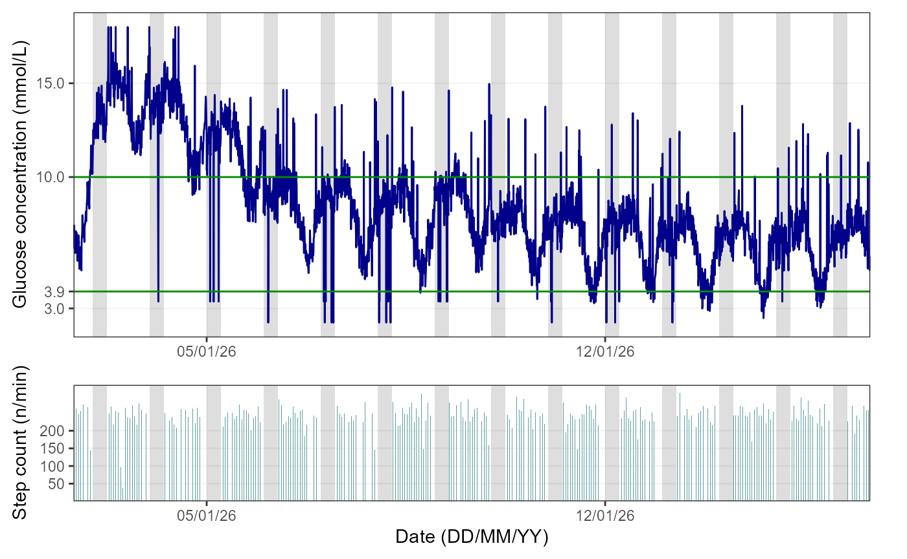
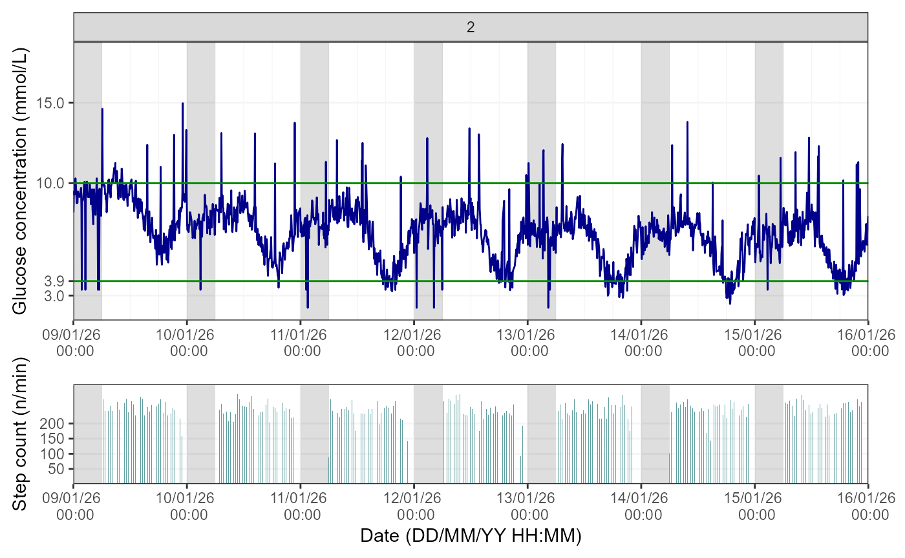
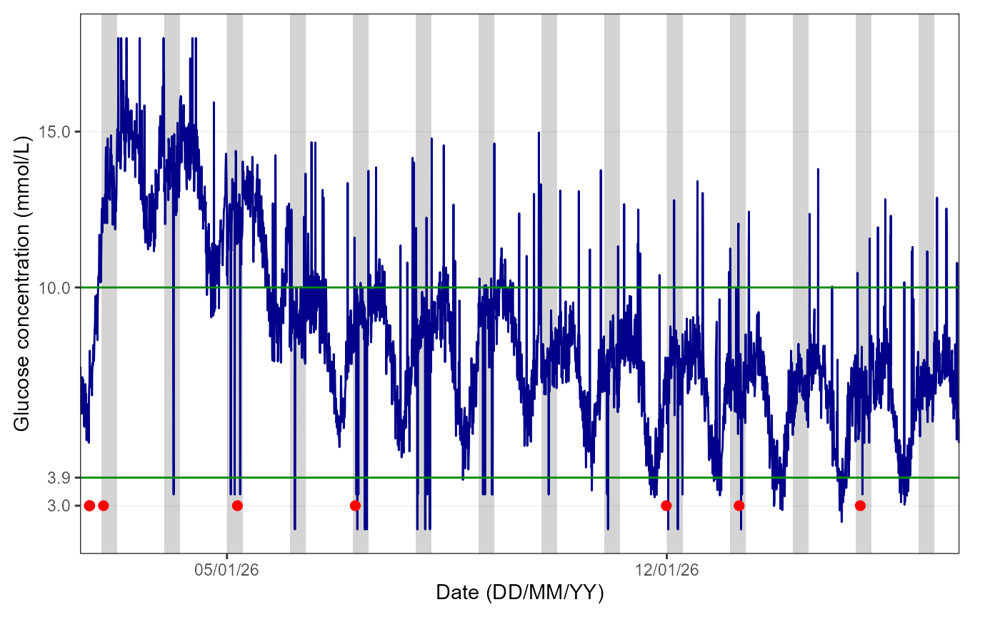

Linking CGM, Activity, Sleep and Person-Reported Hypoglycaemia Data
Source:vignettes/linking_data.Rmd
linking_data.Rmd1. Introduction
The hypometrics package was built to handle glucose,
person-reported hypoglycaemia, physical activity and sleep data both
individually and in combination. This tutorial describes functions that
allows the user to link these data and visualise the linked outputs.
Setup
To be able to use the step count and heart rate functions, firstly
install and load hypometrics.
#Install
install.packages("remotes")
remotes::install_github("leicester-cdag/hypometrics")
#Load package
library(hypometrics)2. Linking CGM and sleep data
The function cgmsleepLink() allows the user to link CGM
data with sleep data from an activity tracker, here the Fitbit Charge 4.
Thus, using this function, the user would be able to determine whether
the participant was asleep or awake at the time of a hypoglycaemic event
for example. The function requires the CGM dataframe in a format such as
the one described in the CGM
data tutorial and a sleep data frame such as the one described in
the Sleep
data tutorial.
The output of that function is a data frame in a long format with a sleep status (either asleep, awake or NA i.e. missing) for each CGM timestamp and glucose value, as shown below.
hypometrics::cgmsleepLink(CgmDataFrame = hypometrics::cgm,
SleepDataFrame = hypometrics::raw_sleep) %>%
dplyr::slice(1:10)
#> id sleep_status cgm_timestamp glucose
#> 1 P01 Asleep 2026-01-01 07:22:00 6.46
#> 2 P01 Asleep 2026-01-01 07:27:00 6.00
#> 3 P01 Asleep 2026-01-01 07:32:00 7.06
#> 4 P01 Asleep 2026-01-01 07:37:00 7.63
#> 5 P01 Awake 2026-01-01 07:42:00 6.99
#> 6 P01 Awake 2026-01-01 07:47:00 6.81
#> 7 P01 Awake 2026-01-01 07:52:00 6.26
#> 8 P01 Awake 2026-01-01 07:57:00 6.69
#> 9 P01 Awake 2026-01-01 08:02:00 6.74
#> 10 P01 Awake 2026-01-01 08:07:00 6.233. Linking CGM and activity data
The function cgmactivityLink() allows the user to link
CGM data with step count and heart rate data from an activity tracker,
here the Fitbit Charge 4. Thus, using this function, the user would be
able to determine number of steps or heart rate before the onset of a
hypoglycaemic event for example.
The user has two options using the DataType parameter of
the function: to link CGM data with step count data (i.e. DataType =
“stepcount”) or with heart rate data (i.e., DataType = “heartrate”).
CGM, step count and heart rate data must be in the same format as
previously described for the function to run smoothly.
The function works out the number of step/heart rate timestamps between two consecutive CGM timestamps and either returns the exact step count/heart rate (if a single timestamp is detected) or an average (if multiple timestamps fit within each CGM timestamp). The latter would be when for example, the heart rate data is more granular than the CGM data.
The output of the function is a dataset where for each CGM timestamp and glucose value, there is a corresponding step count/heart rate value if data is available or missing value if no step count/heart rate timestamps fitted within the CGM timestamps.
CGM linked with step count data:
hypometrics::cgmactivityLink(CgmDataFrame = hypometrics::cgm,
ActivityDataFrame = hypometrics::raw_step,
DataType = "stepcount") %>%
dplyr::slice(1:10)
#> id cgm_timestamp glucose step_count
#> 1 P01 2026-01-01 07:22:00 6.46 204
#> 2 P01 2026-01-01 07:27:00 6.00 189
#> 3 P01 2026-01-01 07:32:00 7.06 178
#> 4 P01 2026-01-01 07:37:00 7.63 236
#> 5 P01 2026-01-01 07:42:00 6.99 205
#> 6 P01 2026-01-01 07:47:00 6.81 171
#> 7 P01 2026-01-01 07:52:00 6.26 215
#> 8 P01 2026-01-01 07:57:00 6.69 197
#> 9 P01 2026-01-01 08:02:00 6.74 214
#> 10 P01 2026-01-01 08:07:00 6.23 210CGM linked with heart data:
hypometrics::cgmactivityLink(CgmDataFrame = hypometrics::cgm,
ActivityDataFrame = hypometrics::raw_hr,
DataType = "heartrate") %>%
dplyr::slice(1:10)
#> id cgm_timestamp glucose heart_rate
#> 1 P01 2026-01-01 07:22:00 6.46 67
#> 2 P01 2026-01-01 07:27:00 6.00 66
#> 3 P01 2026-01-01 07:32:00 7.06 65
#> 4 P01 2026-01-01 07:37:00 7.63 71
#> 5 P01 2026-01-01 07:42:00 6.99 68
#> 6 P01 2026-01-01 07:47:00 6.81 65
#> 7 P01 2026-01-01 07:52:00 6.26 70
#> 8 P01 2026-01-01 07:57:00 6.69 68
#> 9 P01 2026-01-01 08:02:00 6.74 71
#> 10 P01 2026-01-01 08:07:00 6.23 714. Visualising CGM and activity data
To visualise CGM data linked with step count or heart rate data, the
function cgmactivityVisualise() can be used. Similarly to
the cgmVisualise() function, this function allows the user
to visualise CGM and activity data over time at three different levels
of granularity. For the function to run, the DataFrame used
must be containing CGM data linked with step count or heart rate data
(e.g. output of the cgmactivityLink() function).
Overall
Using the default function parameters, you will obtain an overview of glucose and activity data for the entire study period for a selected participant.
To visualise CGM and step count data, the user needs to specify
“stepcount” for the DataType argument, as shown below:
## Creating the linked CGM and step count dataset
linked_data <- hypometrics::cgmactivityLink(CgmDataFrame = hypometrics::cgm,
ActivityDataFrame = hypometrics::raw_step,
DataType = "stepcount")
##Visualising the linked data
cgmactivityVisualise(DataFrame = linked_data,
StudyID = "P02",
DataType = "stepcount")
The figures shows the glucose trace in dark blue (the 3.9-10mmol/L range is delimited by green lines) and the step count bars in cadet blue. By default, the function will produce a figure with a light grey area highlighting the period from 00:00 to 06:00, as it is typically used when examining nocturnal hypoglycaemia.
To visualise CGM and heart rate data, the user needs to specify
“heartrate” for the DataType argument, as shown below:
## Creating the linked CGM and heart rate dataset
linked_data <- hypometrics::cgmactivityLink(CgmDataFrame = hypometrics::cgm,
ActivityDataFrame = hypometrics::raw_hr,
DataType = "heartrate")
##Visualising the linked data
cgmactivityVisualise(DataFrame = linked_data,
StudyID = "P01",
DataType = "heartrate")The figure shows the glucose trace in dark blue (the 3.9-10mmol/L range is delimited by green lines) and heart rate trace in dark red. By default, the function will produce a figure with a light grey area highlighting the period from 00:00 to 06:00, as it is typically used when examining nocturnal hypoglycaemia.
Note: if sleep tracker data is available, the user
can plot this instead by specifying “yes” to the AddSleep
argument of the function (default is “no”) and the
DataFrame used must be one where CGM and sleep data are
linked.
Week by week
It is also possible to view glucose and activity data on a weekly
basis by specifying a breakdown by week in the TimeBreak
argument of the function and which week is of interest using the
PageNumber argument.The number at the top of the figure
indicates the week selected for visualisation. Please note the function
will return an error if the picked PageNumber (i.e. here, week number)
is out of the data range (e.g. PageNumber = 11 when there are only 10
weeks of data).
To visualise CGM and step count data, the user needs to further
specify “stepcount” for the DataType argument, as shown
below:
## Visualising the linked dataset
cgmactivityVisualise(DataFrame = linked_data,
StudyID = "P02",
TimeBreak = "week",
PageNumber = 2,
DataType = "stepcount")
If the user requires a CGM and heart rate visualisation instead, the DataType parameter would need to be changed to “heartrate”.
Day by day
Lastly, for further granularity, there is an option to visualise this data for specific days using the same logic as for the weekly data.
To visualise CGM and step count data, the user needs to further
specify “stepcount” for the DataType argument, as shown
below:
## Visualising the linked dataset
cgmactivityVisualise(DataFrame = linked_data,
StudyID = "P01",
TimeBreak = "day",
PageNumber = 6,
DataType = "stepcount")If the user requires a CGM and heart rate visualisation instead, the DataType parameter would need to be changed to “heartrate”.
5. Linking CGM and Person-Reported Hypoglycaemia data
The function cgmprhLink() allows the user to link CGM
data with person-reported hypoglycaemia data from the Hypo-METRICS app.
Thus, using this function, the user would be able to determine how
sensor-detected hypoglycaemia (CGM) align with person-reported
hypoglycaemia, for example.
For the function to run smoothly, the user needs firstly to build a
PRH map in the wide format containing at least an ID and PRH timestamp
column. This can be obtained by firstly running
umotifClean() function followed by the
prhLink() function, as shown below:
## Cleaning motif and checkin data
motif <- umotifClean(DataFrame = hypometrics::raw_motif_segment,
FileType = "motif")
checkin <- umotifClean(DataFrame = hypometrics::raw_checkin,
FileType = "checkin")
## Creating the linked PRH dataset
prh_map <- prhLink(MotifDataFrame = motif,
CheckinDataFrame = checkin)
##Creating the linked CGM PRH data
cgmprhLink(CgmDataFrame = hypometrics::cgm,
PrhDataFrame = prh_map) %>%
dplyr::slice(55:65)
#> id cgm_timestamp glucose checkin_prh_timestamp motif_prh_timestamp
#> 1 P01 2026-01-01 11:52:00 7.05 <NA> <NA>
#> 2 P01 2026-01-01 11:57:00 7.36 <NA> <NA>
#> 3 P01 2026-01-01 12:02:00 7.10 <NA> <NA>
#> 4 P01 2026-01-01 12:07:00 6.86 <NA> <NA>
#> 5 P01 2026-01-01 12:12:00 6.15 <NA> <NA>
#> 6 P01 2026-01-01 12:17:00 6.77 <NA> <NA>
#> 7 P01 2026-01-01 12:22:00 6.26 <NA> 2026-01-01 12:22:00
#> 8 P01 2026-01-01 12:27:00 6.74 <NA> <NA>
#> 9 P01 2026-01-01 12:32:00 6.95 <NA> <NA>
#> 10 P01 2026-01-01 12:37:00 6.27 <NA> <NA>
#> 11 P01 2026-01-01 12:42:00 6.36 <NA> <NA>The output shows a PRH timestamp on the same row as the closest CGM timestamp: the participant reported a hypoglycaemia episode using the Hypo-METRICS app at 12:22 which aligns with CGM data as at the time (12:22). However, the glucose value (6.26 mmmol/L) was not below the hypoglycaemia threshold of 3.9 mmol/L.
6. Linking Sensor-Detected and Person-Reported Hypoglycaemia data
The function sdhprhLink() allows the integration of
sensor-detected hypoglycaemia (SDH) data with person-reported
hypoglycaemia data. In other words, episodes of SDH are mapped out
against episodes of PRH according to timing of episodes and the user is
able to assess the overlap between the two event types.
As a pre-requisite of this function, the user would need to use the
sdhDetection(), umotifClean() and
prhLink() functions to produce the relevant SDH and PRH
maps, as shown below:
## Cleaning PRH data
motif <- umotifClean(DataFrame = hypometrics::raw_motif_segment,
FileType = "motif")
checkin <- umotifClean(DataFrame = hypometrics::raw_checkin,
FileType = "checkin")
## Creating the SDH and PRH maps
sdh_map <- sdhDetection(DataFrame = hypometrics::cgm)
prh_map <- prhLink(MotifDataFrame = motif,
CheckinDataFrame = checkin)
##Creating the linked SDH PRH data
sdhprhLink(SdhDataFrame = sdh_map,
PrhDataFrame = prh_map) %>%
dplyr::slice(1:10) %>%
dplyr::select(id, sdh_interval, checkin_prh_timestamp, motif_prh_timestamp, sdh_duration_mins, sdh_nadir, symptomatic_prh)
#> id sdh_interval checkin_prh_timestamp
#> 1 1 NA--NA <NA>
#> 2 1 NA--NA 2026-01-07 04:08:00
#> 3 1 2026-01-11 17:57:00 UTC--2026-01-11 18:42:00 UTC <NA>
#> 4 1 NA--NA 2026-01-12 04:01:00
#> 5 1 NA--NA 2026-01-12 22:17:00
#> 6 1 2026-01-13 16:57:00 UTC--2026-01-13 18:47:00 UTC <NA>
#> 7 1 2026-01-13 19:17:00 UTC--2026-01-13 20:27:00 UTC <NA>
#> 8 1 2026-01-14 17:57:00 UTC--2026-01-14 18:22:00 UTC <NA>
#> 9 1 2026-01-14 18:42:00 UTC--2026-01-14 18:57:00 UTC <NA>
#> 10 1 2026-01-14 19:17:00 UTC--2026-01-14 19:52:00 UTC <NA>
#> motif_prh_timestamp sdh_duration_mins sdh_nadir symptomatic_prh
#> 1 2026-01-01 12:22:00 NA NA Yes
#> 2 <NA> NA NA No
#> 3 <NA> 45 3.4 <NA>
#> 4 <NA> NA NA No
#> 5 <NA> NA NA No
#> 6 <NA> 110 3.0 <NA>
#> 7 <NA> 70 2.9 <NA>
#> 8 <NA> 25 2.9 <NA>
#> 9 <NA> 15 2.5 <NA>
#> 10 <NA> 35 3.1 <NA>The output contains all the information available in the individual SDH and PRH maps including symptoms reported and whether event occurred during the day or night, but for illustrative purposes here, only a limited number of columns are shown. We can see that there was no overlap between SDH and PRH episodes for this participant.
7. Visualising CGM and Person-Reported Hypoglycaemia data
To visualise CGM data linked with person-reported hypoglycaemia data,
the function cgmprhVisualise() can be used. Similarly to
the cgmVisualise() function, this function allows the user
to visualise CGM and hypoglycaemia data over time at three different
levels of granularity. For the function to run, the
DataFrame used must be containing CGM data linked with
hypoglycaemia data (e.g. output of the cgmprhLink()
function).
Overall
Using the default function parameters, you will obtain an overview of glucose and hypoglycaemia data for the entire study period for a selected participant.
## Cleaning motif and checkin data
motif <- umotifClean(DataFrame = hypometrics::raw_motif_segment,
FileType = "motif")
checkin <- umotifClean(DataFrame = hypometrics::raw_checkin,
FileType = "checkin")
## Creating the linked PRH dataset
prh_map <- prhLink(MotifDataFrame = motif,
CheckinDataFrame = checkin)
##Creating the linked CGM PRH data
linked_data <- cgmprhLink(CgmDataFrame = hypometrics::cgm,
PrhDataFrame = prh_map)
##Visualising the linked data
cgmprhVisualise(DataFrame = linked_data,
StudyID = "P02")
The red dots over the blue glucose trace indicate date and times when participants reported episodes of hypoglycaemia.By default, the function will produce a figure with a light grey area highlighting the period from 00:00 to 06:00, as it is typically used when examining nocturnal hypoglycaemia.
Note: if sleep tracker data is available, the user
can plot this instead by specifying “yes” to the AddSleep
argument of the function (default is “no”) and the
DataFrame used must be one where CGM and sleep data are
linked.
The user can also have a closer look at how person-reported hypoglycaemia episodes align with sensor-detected hypoglycaemia by visualising specific weeks/days as explained in the sections below.
Week by week
It is also possible to view glucose and hypoglycaemia data on a
weekly basis by specifying a breakdown by week in the
TimeBreak argument of the function and which week is of
interest using the PageNumber argument.The number at the
top of the figure indicates the week selected for visualisation. Please
note the function will return an error if the picked PageNumber
(i.e. here, week number) is out of the data range (e.g. PageNumber = 11
when there are only 10 weeks of data).
##Visualising the linked data
cgmprhVisualise(DataFrame = linked_data,
StudyID = "P01",
TimeBreak = "week",
PageNumber = 2)Day by day
Lastly, for further granularity, there is an option to visualise this data for specific days using the same logic as for the weekly data.
## Visualising the linked dataset
cgmprhVisualise(DataFrame = linked_data,
StudyID = "P01",
TimeBreak = "day",
PageNumber = 2)